- Intro: {ggchalkboard}
- Derivative themes: blackboard, slateboard, glassboard …
- Minimal working package
- More considerations
ggchalkboard is a teaching package, where you can browse the source code right from the readme and package homepage! It shows examples of how to extend ggplot2 themes with version 4.0.0 which has some significant updates.
4.0.0 also introduces
ink(the black of points in default theme),paper(the white background), andaccent(the blue ingeom_smooth(), and a few other geoms).Geom aesthetics can be updated via
theme()! 🥳Some scales can be updated via theme including discrete and continuous color (and fill) scales.
Thematic choices can be ‘make or break’ when it comes to audience. I don’t consider myself gifted when it comes to thematic choices in ggplot2, but I do like chalkboards and think we can do a reasonable job mimicking their look and that more gifted themers might learn from these efforts! Using the chalkboard theme and its family should say to the audience, ‘it’s safe to ask questions about this plot; we’re in the learning phase’
I welcome feedback on the thematic or coding choices.
Where we are headed:
library(ggplot2)
library(ggchalkboard)
ggplot(cars) +
aes(speed, dist) +
geom_point() +
geom_smooth() +
labs(y = "distance") +
labs(title = "Default ggplot2 theme")
last_plot() +
theme_chalkboard() +
labs(title = "New chalkboard theme")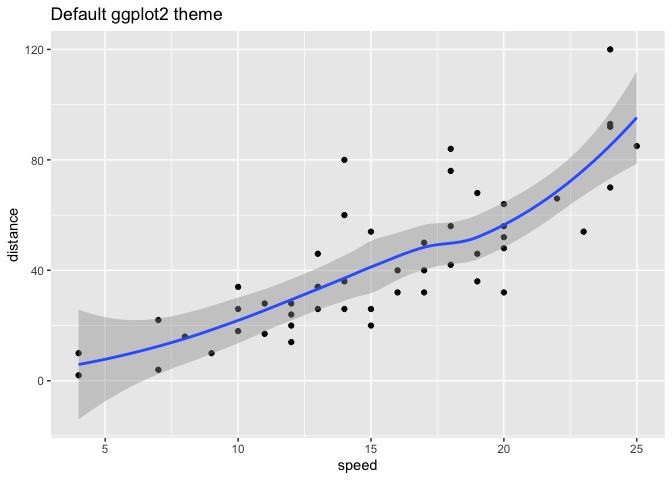
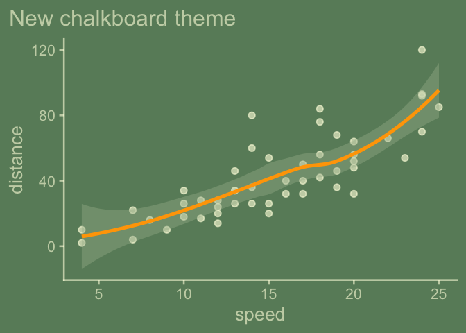
We’ll be modifying a theme, since we don’t want to start from scratch – a theme contains a lot of decisions; to get a sense of that we can look at the length of the list object returned by ggplot2::theme_gray()
ggplot2::theme_gray() |> length()
#> [1] 144Getting started: theme_whiteboard()
So let’s get to writing. We’ll start with theme_whiteboard.
#' @export
theme_whiteboard <- function(base_size = 18,
base_theme = ggplot2::theme_classic,
paper = "grey98",
ink = "grey20",
accent = alpha("darkred", .7),
palette.colour.continuous = "plasma",
palette.fill.continuous = "plasma",
palette.colour.discrete = "plasma",
palette.fill.discrete = "plasma",
...){
base_theme(base_size = base_size,
paper = paper,
ink = ink,
accent = accent,
...) %+replace%
theme(plot.title.position = "plot",
palette.colour.continuous = palette.colour.continuous,
palette.fill.continuous = palette.fill.continuous,
palette.colour.discrete = palette.colour.discrete,
palette.fill.discrete = palette.fill.discrete
# palette.fill.ordinal = palette.colour.discrete, # wish list
# palette.fill.ordinal = palette.fill.discrete
)
}
ggplot(cars) +
aes(speed, dist) +
geom_point() +
geom_smooth() +
labs(y = "distance") +
theme_whiteboard()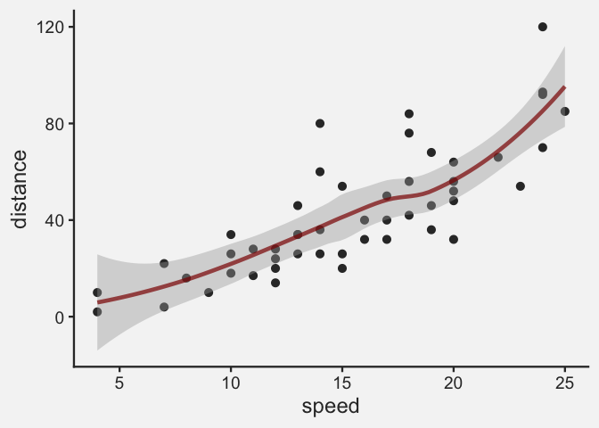
last_plot() +
theme_whiteboard(base_theme = theme_gray)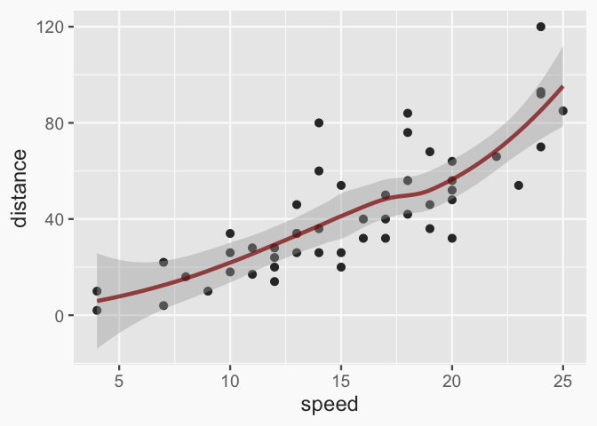
p1 <- ggplot(cars) +
aes(speed, dist) +
geom_point() +
geom_smooth() +
labs(title = "accent")
p2 <- ggplot(cars) +
aes(speed, dist) +
geom_point() +
aes(color = speed) +
labs(title = "continuous")
p3 <- ggplot(penguins) +
aes(x = species,
fill = species) +
geom_bar() +
labs(title = "discrete")
p4 <- ggplot(diamonds) +
aes(x = cut,
fill = cut) +
geom_bar() +
labs(title = "ordinal")
library(patchwork)
patchwork_ensemble <-
(p1 + p2) / (p3 + p4) &
theme(legend.position = "none")
theme_set(theme_whiteboard(base_size = 10))
patchwork_ensemble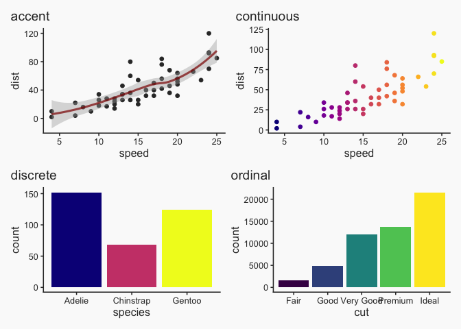
Color palette adjustments for theme_chalkboard()
# color mixed continuous viridis pal
viridis_pal_c <- function(alpha = 1, begin = 0, end = 1, direction = 1,
option = "viridis", colmix = "white", amount = 0){
scales::pal_gradient_n(
scales::pal_viridis(alpha = alpha,
begin = begin,
end = end,
direction = direction,
option = option)(6) |>
scales::col_mix(colmix, amount),
values = NULL,
space = "Lab")
}
viridis_c_chalkboard <- function(){
viridis_pal_c(alpha = .4, begin = 0, end = .95, direction = 1, option = "viridis", colmix = "lightyellow", amount = .6)
}
# color mixed discrete viridis pal
viridis_pal_d <- function(alpha = 1, begin = 0, end = 1, direction = 1,
option = "viridis", colmix = "white", amount = 0){
scales::pal_viridis(alpha, begin, end, direction, option) |>
scales::col_mix(colmix, amount)
}
viridis_d_chalkboard <- function(){
viridis_pal_d(alpha = .4, begin = 0, end = .95, direction = 1, option = "viridis", colmix = "lightyellow", amount = .6)
}
#' @export
theme_chalkboard <- function(paper = "darkseagreen4",
ink = alpha("lightyellow", .6),
accent = alpha("orange", 1),
base_size = 20,
base_theme = theme_classic,
palette.colour.continuous = viridis_c_chalkboard(),
palette.fill.continuous = viridis_c_chalkboard(),
palette.colour.discrete = viridis_d_chalkboard(),
palette.fill.discrete = viridis_d_chalkboard(),
...){
base_theme(paper = paper,
ink = ink,
accent = accent,
base_size = base_size, ...) %+replace%
theme(plot.title.position = "plot",
palette.colour.continuous = palette.colour.continuous,
palette.fill.continuous = palette.fill.continuous,
palette.colour.discrete = palette.colour.discrete,
palette.fill.discrete = palette.fill.discrete
)
}
library(tidyverse)
ggplot(cars) +
aes(speed, dist) +
geom_point() +
geom_smooth() +
labs(y = "distance") +
labs(title = "Default ggplot2 theme")
last_plot() +
theme_chalkboard() +
labs(title = "New theme demonstration")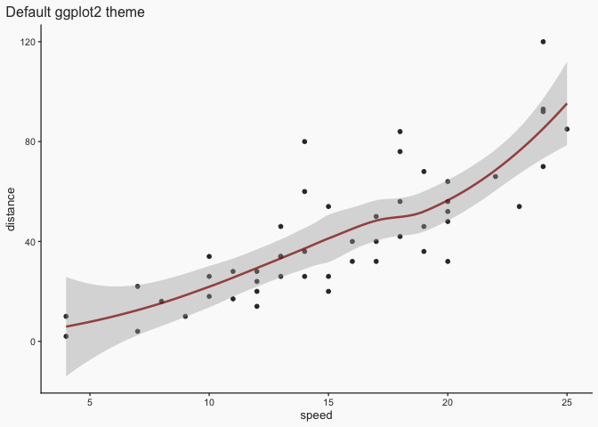
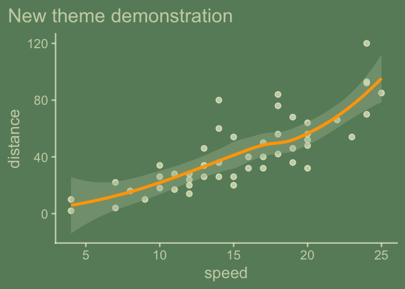
Derivative themes: blackboard, slateboard, glassboard …
#' @export
theme_blackboard <- function(paper = "grey20",
ink = alpha("whitesmoke", .6),
accent = alpha("palevioletred3", .8),
base_size = 18,
base_theme = theme_chalkboard,
...){
theme_chalkboard(paper = paper, ink = ink, accent = accent,
base_size = base_size, ...)
}
theme_set(theme_blackboard(base_size = 10))
patchwork_ensemble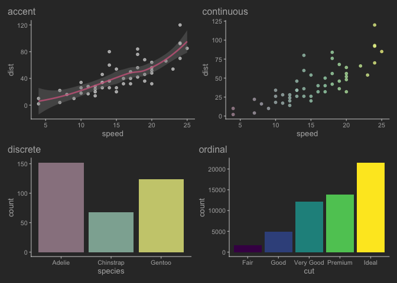
#' @export
theme_slateboard <- function(paper = "lightskyblue4",
ink = alpha("whitesmoke", .6),
accent = alpha("palevioletred3", .8),
base_size = 18,
base_theme = theme_chalkboard,
...){
theme_chalkboard(paper = paper, ink = ink, base_size = base_size,
accent = accent, ...)
}
theme_set(theme_slateboard(base_size = 10))
patchwork_ensemble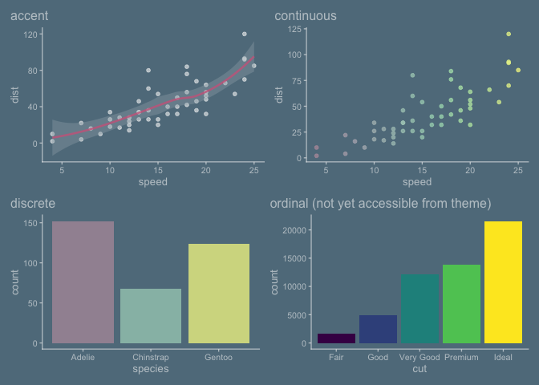
#' @export
theme_glassboard <- function(paper = alpha("white", 0), # transparent
ink = alpha("black", .7),
accent = alpha("darkred", .7),
base_size = 18,
base_theme = ggplot2::theme_classic,
...){
base_theme(paper = paper, ink = ink, accent = accent,
base_size = base_size, ...)
}
theme_set(theme_glassboard(base_size = 10))
patchwork_ensemble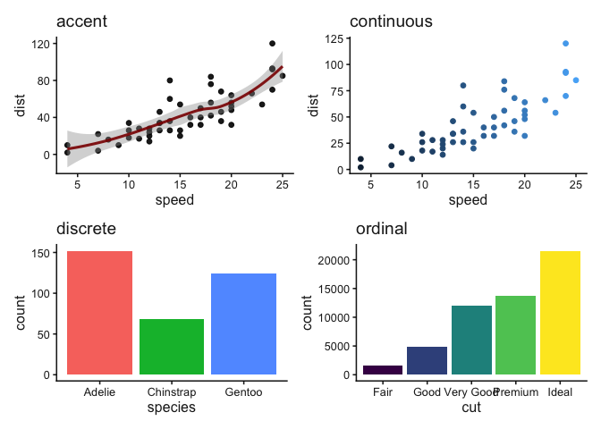
theme_rosling <- function(paper = alpha("black", .9), ink = "cadetblue2",
accent = "orange",
base_size = 20,
base_theme = theme_classic,
palette.colour.continuous =
viridis_pal_c(option = "viridis", begin = .4),
palette.fill.continuous =
viridis_pal_c(option = "viridis", begin = .4),
palette.colour.discrete =
viridis_pal_d(colmix = "cadetblue1", amount = .2,
alpha = 1),
palette.fill.discrete =
viridis_pal_d(colmix = "cadetblue1", amount = .5,
alpha = 1),
...){
theme_chalkboard(paper = paper, ink = ink, accent = accent, base_theme = base_theme,
base_size = base_size,
palette.colour.continuous = palette.colour.continuous,
palette.fill.continuous = palette.fill.continuous,
palette.colour.discrete = palette.colour.discrete,
palette.fill.discrete = palette.fill.discrete
)
}
theme_set(theme_rosling(base_size = 10))
patchwork_ensemble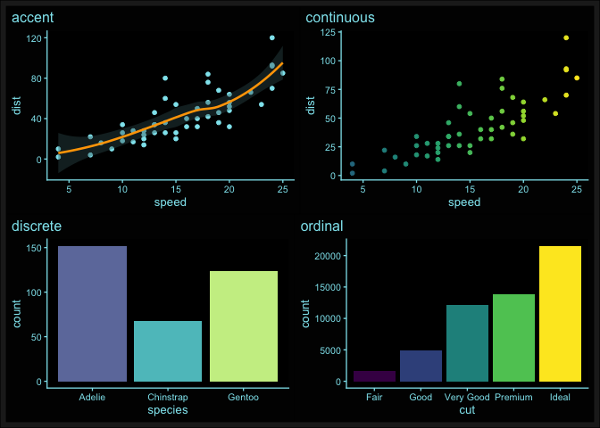
Minimal working package
devtools::create(".")Moved functions R folder
#knitrExtra::chunk_names_get()
usethis::use_package("ggplot2")
knitrExtra:::chunk_to_r("theme_chalkboard")
knitrExtra:::chunk_to_r("theme_blackboard")
knitrExtra:::chunk_to_r("theme_whiteboard")
knitrExtra:::chunk_to_r("theme_slateboard")
knitrExtra:::chunk_to_r("theme_glassboard")More considerations
colorblindness colorblindr
remotes::install_github("clauswilke/colorblindr")
(patchwork_ensemble &
theme_chalkboard()) |>
colorblindr::cvd_grid()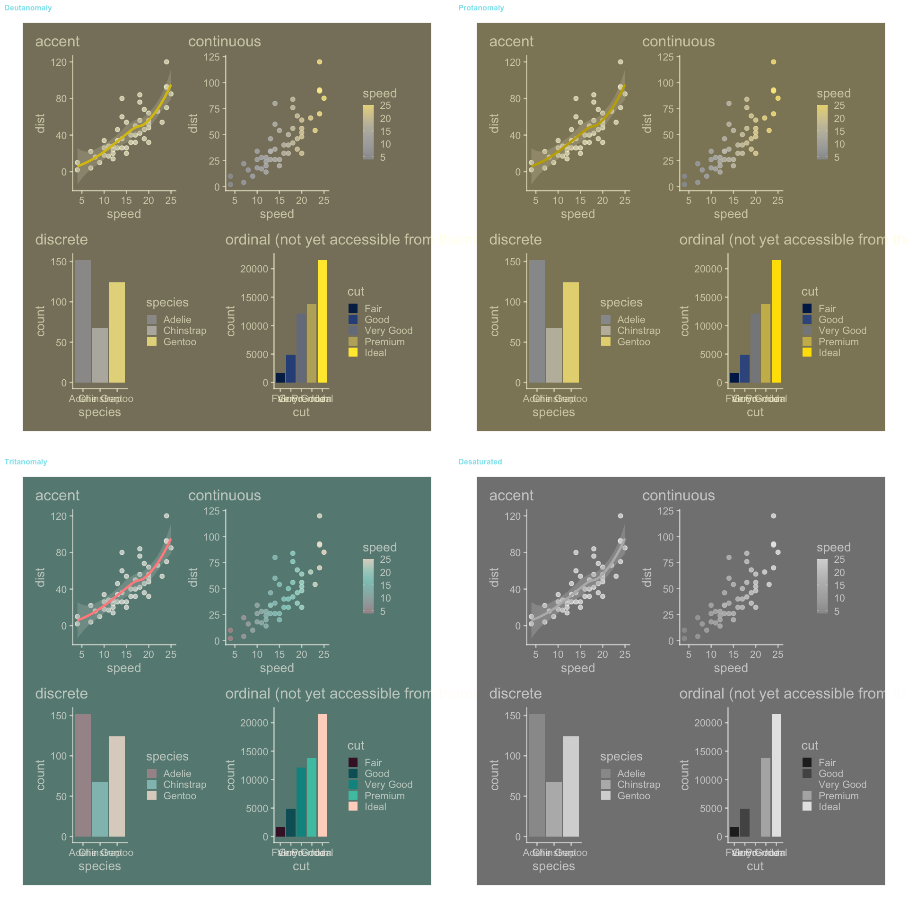
A test with colorblindr
Color and fill scale are probably of greater interest, I know. Something to come back to.
looking to the future… consider Joseph Lamarange’s work!? safe_pal
ma <- function(x, b = "lightyellow", amount = .5, alpha = .8){
x |> scales::col_mix(b, amount) |> alpha(alpha)
}
safe_pal_mixer <- function (reverse = FALSE, b = "lightyellow", amount = .5, alpha = .8)
{
function(n) {
rlang::check_installed("khroma")
if (n <= 6 && !reverse)
return((khroma::color("bright"))(n) |> ma(b = b, amount = amount, alpha = alpha))
if (n <= 6 && reverse) {
col <- (khroma::color("bright", reverse = TRUE))(n +
1)
return(col[2:(n + 1)] |> ma(b = b, amount = amount, alpha = alpha))
}
if (n %in% 7:9)
return((khroma::color("muted", reverse = reverse))(n) |> ma(b = b, amount = amount, alpha = alpha))
set.seed(42)
if (n <= 23)
return(sample((khroma::color("discrete rainbow",
reverse = reverse))(n)) |> ma(b = b, amount = amount, alpha = alpha))
sample((khroma::color("smooth rainbow", reverse = reverse))(n) |> ma(b = b, amount = amount, alpha = alpha))
}
}Considerations for extenders…
What can be done about layer from a ggplot2 extension that has hard coded aesthetic defaults?
library(ggplot2)
library(ggalluvial)
GeomStratum$default_aes # hardcoded
#> $size
#> [1] 0.5
#>
#> $linewidth
#> [1] 0.5
#>
#> $linetype
#> [1] 1
#>
#> $colour
#> [1] "black"
#>
#> $fill
#> [1] "white"
#>
#> $alpha
#> [1] 1
#>
#> attr(,"class")
#> [1] "uneval"
titanic_flat <- data.frame(Titanic)
ggplot(data = titanic_flat) + # Ok Lets look at this titanic data
aes(y = Freq, axis1 = Sex, axis2 = Survived) + # Here some variables of interest
ggchalkboard:::theme_chalkboard(base_size = 18) + # in a alluvial plot first look
geom_alluvium() + # And we are ready to look at flow
geom_stratum() + # And we can label our stratum axes
stat_stratum(geom = "text", aes(label = after_stat(stratum))) 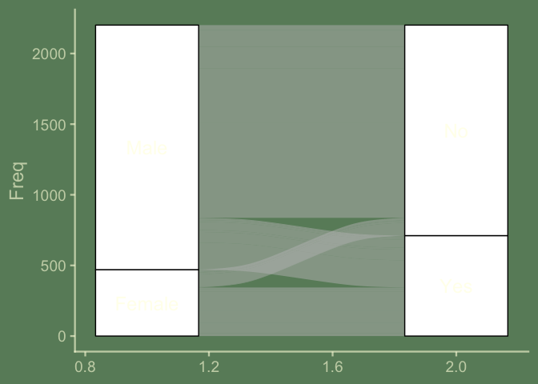
# Step 1. Look at dynamic default aes from base ggplot2 for reference
GeomRect$default_aes
#> Aesthetic mapping:
#> * `colour` -> `from_theme(colour %||% NA)`
#> * `fill` -> `from_theme(fill %||% col_mix(ink, paper, 0.35))`
#> * `linewidth` -> `from_theme(borderwidth)`
#> * `linetype` -> `from_theme(bordertype)`
#> * `alpha` -> NA
# Step 2. Update defaults as required.
GeomStratum$default_aes <- aes(color = from_theme(ink),
fill = from_theme(paper),
linewidth = from_theme(borderwidth),
linetype = from_theme(bordertype),
alpha = NA)
# Alternative Step 2 An in-script, alternative could look like this
aes_update <- aes(color = from_theme(ink))
GeomStratum$default_aes <- GeomRect$default_aes |> modifyList(aes_update)
geom_stratum
#> function (mapping = NULL, data = NULL, stat = "stratum", position = "identity",
#> show.legend = NA, inherit.aes = TRUE, width = 1/3, na.rm = FALSE,
#> ...)
#> {
#> layer(geom = GeomStratum, mapping = mapping, data = data,
#> stat = stat, position = position, show.legend = show.legend,
#> inherit.aes = inherit.aes, params = list(width = width,
#> na.rm = na.rm, ...))
#> }
#> <bytecode: 0x129329b28>
#> <environment: namespace:ggalluvial>
ggplot(data = titanic_flat) + # Ok Lets look at this titanic data
aes(y = Freq, axis1 = Sex, axis2 = Survived) + # Here some variables of interest
ggchalkboard::theme_chalkboard(base_size = 18) + # in a alluvial plot first look
geom_alluvium() + # And we are ready to look at flow
geom_stratum() + # And we can label our stratum axes
stat_stratum(geom = "text", aes(label = after_stat(stratum))) 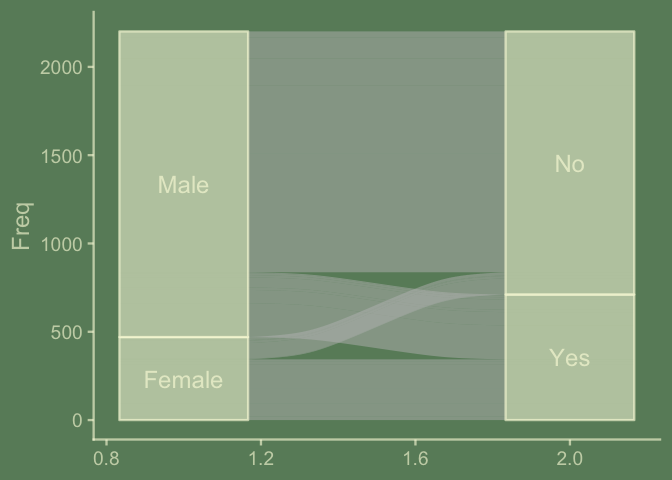